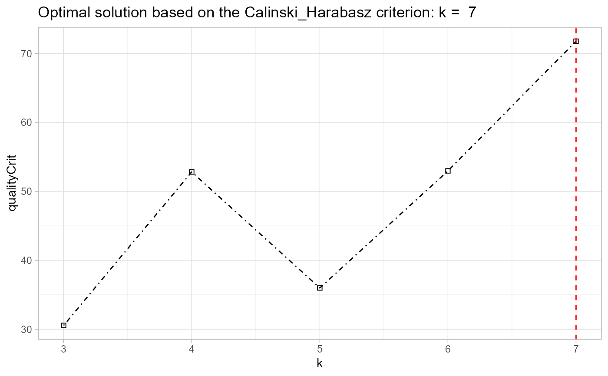

Given a list of trajectories and a functional method,
this function clusters the trajectories into a k number of
groups. If a vector of two numbers is given, the function determines
the best solution from those options based on the Caliński-Harabasz
criterion.
akclustr(traj, id_field = FALSE, method = "linear", k = c(3,6), crit="Silhouette", verbose = TRUE, quality_plot=FALSE)
| traj | [matrix (numeric)]: longitudinal data. Each row represents an individual trajectory (of observations). The columns show the observations at consecutive time steps. |
|---|---|
| id_field | [numeric or character] Whether the first column of the
|
| method | [character] The parametric initialization strategy.
Currently, the only available method is a |
| k | [integer or vector (numeric)] either an exact integer number
of clusters, or a vector of length two specifying the minimum and
maximum numbers of clusters to be examined from which the best
solution will be determined. In either case, the minimum number
of clusters is |
| crit | [character] a string specifying the type of the criterion
to use for assessing the quality of the cluster solutions, when
|
| verbose | to suppress output messages (to the console)
during clustering. Default: |
| quality_plot | Whether to show plot of quality criteria across
different values of |
generates an akobject consisting of the
cluster solutions at the specified values of k. Also,
the graphical plot of the quality scores of the cluster
solutions.
This function works by first approximating the trajectories
based on the chosen parametric forms (e.g. linear), and then partitions
the original trajectories based on the form groupings, in similar
fashion to k-means clustering (Genolini et al. 2015). The key
distinction of akmedoids compared with existing longitudinal
approaches is that both the initial starting points as well as the
subsequent cluster centers (as the iteration progresses) are based
the selection of observations (medoids) as oppose to centroids.
1. Genolini, C. et al. (2015) kml and kml3d:
R Packages to Cluster Longitudinal Data. Journal of Statistical
Software, 65(4), 1-34. URL http://www.jstatsoft.org/v65/i04/.
2. Rousseeuw P. J. (1987) Silhouettes: A graphical aid
to the interpretation and validation of cluster analysis.
J. Comput. Appl. Math 20:53–65.
3. Caliński T, Harabasz J (1974) A dendrite method for
cluster analysis. Commun. Stat. 3:1-27.
data(traj) trajectry <- data_imputation(traj, id_field = TRUE, method = 2, replace_with = 1, fill_zeros = FALSE)#> [1] "8 entries were found/filled!"#> location_ids X2001 X2002 X2003 X2004 X2005 X2006 X2007 X2008 X2009 #> 1 E01012628 0.0385 0.0000 0.0146 0.0308 0.0159 0.0000 0.0155 0.0519 0.0000 #> 2 E01004768 0.1154 0.1254 0.0291 0.0615 0.1111 0.0895 0.0155 0.0390 0.0222 #> 3 E01004803 0.0513 0.0584 0.0000 0.1538 0.0317 0.0537 0.0932 0.0779 0.1778 #> 4 E01004804 0.0897 0.0584 0.1310 0.0462 0.0317 0.0698 0.0932 0.0390 0.0444 #> 5 E01004807 0.0256 0.0763 0.0728 0.0769 0.0952 0.0780 0.0466 0.0649 0.0889 #> 6 E01004808 0.1026 0.0974 0.1164 0.0615 0.0159 0.0895 0.0932 0.0130 0.0222 #> 7 E01004788 0.0256 0.0779 0.0396 0.0308 0.0317 0.0716 0.0155 0.0390 0.0000 #> 8 E01004790 0.1282 0.1752 0.2474 0.2000 0.2381 0.2439 0.2171 0.2468 0.2000 #> 9 E01004805 0.1026 0.0974 0.1455 0.1077 0.1429 0.0716 0.0840 0.0779 0.0667 #> 10 E01004806 0.3205 0.2336 0.2037 0.2308 0.2857 0.2326 0.3261 0.3506 0.3778output <- akclustr(trajectry, id_field = TRUE, method = "linear", k = c(3,7), crit='Calinski_Harabasz', verbose = FALSE, quality_plot=FALSE) print(output)#> $traj #> location_ids X2001 X2002 X2003 X2004 X2005 X2006 X2007 X2008 X2009 #> 1 E01012628 0.0385 0.0000 0.0146 0.0308 0.0159 0.0000 0.0155 0.0519 0.0000 #> 2 E01004768 0.1154 0.1254 0.0291 0.0615 0.1111 0.0895 0.0155 0.0390 0.0222 #> 3 E01004803 0.0513 0.0584 0.0000 0.1538 0.0317 0.0537 0.0932 0.0779 0.1778 #> 4 E01004804 0.0897 0.0584 0.1310 0.0462 0.0317 0.0698 0.0932 0.0390 0.0444 #> 5 E01004807 0.0256 0.0763 0.0728 0.0769 0.0952 0.0780 0.0466 0.0649 0.0889 #> 6 E01004808 0.1026 0.0974 0.1164 0.0615 0.0159 0.0895 0.0932 0.0130 0.0222 #> 7 E01004788 0.0256 0.0779 0.0396 0.0308 0.0317 0.0716 0.0155 0.0390 0.0000 #> 8 E01004790 0.1282 0.1752 0.2474 0.2000 0.2381 0.2439 0.2171 0.2468 0.2000 #> 9 E01004805 0.1026 0.0974 0.1455 0.1077 0.1429 0.0716 0.0840 0.0779 0.0667 #> 10 E01004806 0.3205 0.2336 0.2037 0.2308 0.2857 0.2326 0.3261 0.3506 0.3778 #> #> $id_field #> [1] TRUE #> #> $solutions #> $solutions[[1]] #> [1] "B" "A" "C" "B" "B" "A" "B" "C" "B" "C" #> attr(,"cluster labels for k =") #> [1] 3 #> #> $solutions[[2]] #> [1] "C" "A" "D" "B" "C" "A" "B" "D" "B" "D" #> attr(,"cluster labels for k =") #> [1] 4 #> #> $solutions[[3]] #> [1] "D" "A" "E" "C" "D" "A" "C" "E" "B" "E" #> attr(,"cluster labels for k =") #> [1] 5 #> #> $solutions[[4]] #> [1] "D" "A" "E" "C" "D" "A" "C" "E" "B" "F" #> attr(,"cluster labels for k =") #> [1] 6 #> #> $solutions[[5]] #> [1] "D" "A" "F" "C" "E" "A" "C" "F" "B" "G" #> attr(,"cluster labels for k =") #> [1] 7 #> #> #> $qualitycriterion #> [1] "Quality criterion: Calinski_Harabasz" #> #> $optimal_k #> [1] 7 #> #> $qualityCrit.List #> k qualityCrit #> 1 3 30.55669 #> 2 4 52.81991 #> 3 5 35.99125 #> 4 6 52.97149 #> 5 7 71.77762 #> #> $qltyplot#> #> attr(,"class") #> [1] "akobject" "list"